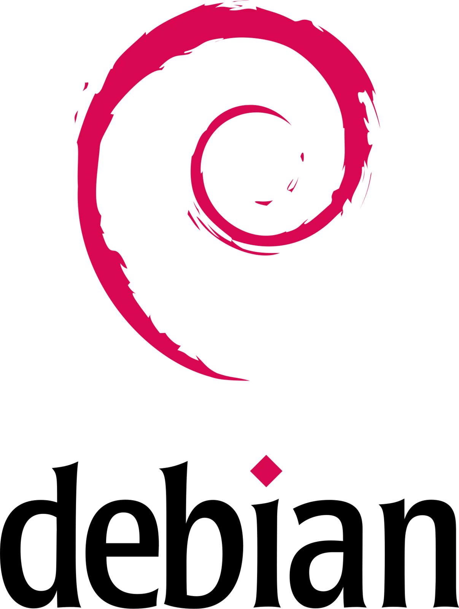
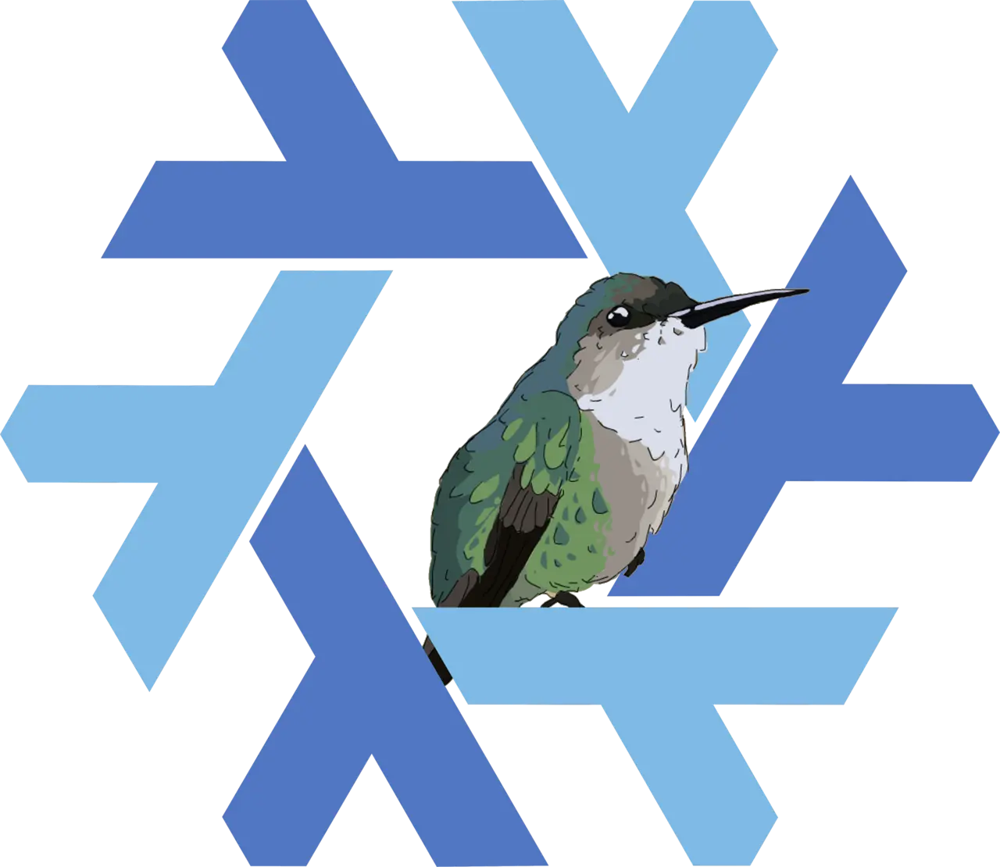
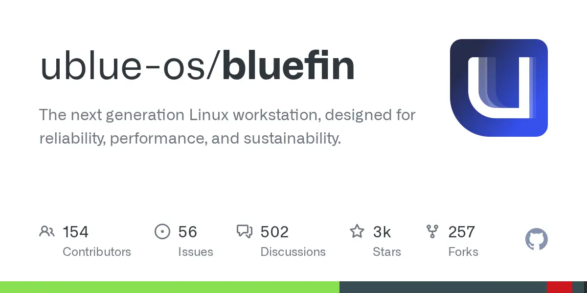

pacman -Syu, every time [5]
Release-model league · season 2026
/
Matchday one: your first Linux install
/
37 sources
/
Survey
Three release models · eight axes · one signing
Fixed vs Rolling vs Atomic
Atomic tops the table. Rolling finishes second. Fixed wins almost nothing — and it is still the one you should sign for month one, because a first Linux install is a survival fixture, not a title race.
Manager's pick
Fixed
point release

Debian 13 trixie
Ubuntu 26.04 LTS
Fedora 44 · openSUSE Leap 16
Ubuntu 26.04 LTS
Fedora 44 · openSUSE Leap 16
1
axes won outright
Not in month one
Rolling
release
Arch Linux
openSUSE Tumbleweed
CachyOS
openSUSE Tumbleweed
CachyOS
2
axes won outright
Tops the table
Image-based
atomic

Silverblue · Kinoite
Bluefin · Aurora · Bazzite
openSUSE Aeon · NixOS
Bluefin · Aurora · Bazzite
openSUSE Aeon · NixOS
3
axes won outright
Eight axes scored · fixed 1 · rolling 2 · atomic 3 · two axes shared · nobody sweeps
Manager's decision · matchday one
Sign
Fedora Workstation 44
Or Ubuntu 26.04 LTS [2]. Fedora's six-month cadence [1] is the vendor-supported middle. Set up btrfs snapshots on day one — neither distro does it for you [3].
Or sign instead
Bluefin DX
If you never want to think about maintenance and you are happy doing all dev work in containers. Bluefin DX ships Docker, VS Code and devcontainers inside the image, auto-updates every six hours, and rolls back with one command [4].
Do not sign
Arch or CachyOS
Arch Linux shipped 13 "manual intervention required" advisories between Jan 2025 and Jul 2026 — each one a boot-breaker if you ignore it [5]. Reading an upstream feed before every update is a skill, not a setting.
The distro question is really three questions stacked on top of each other, and only the first one matters much: release model (how new is the software and who tests it), then package ecosystem (deb/rpm/pacman/nix), then desktop environment. Pick the release model deliberately; the other two are largely reversible or cosmetic.
01
The league table
Eight axes, graded ✓ good · ⚠ conditional · ✗ absent. A cell is marked ▲ AXIS when one model holds it outright; two axes end level and go to nobody.
Axis
Fixed / point release
Rolling release
Image-based / atomic
Software currency on the hosthow old is what you get
⚠ Frozen at release. Debian 13 = kernel 6.12, GCC 14.2, Python 3.13 [8]; Ubuntu 26.04 opens on Linux 7.0 [9]
✓ Current upstream, days behind
⚠ Tracks its base — Fedora Atomic ≈ Fedora cadence, kernel gated ~2 weeks behind on the stable stream [4]
New hardware supportsilicon bought after install day
⚠ An LTS freezes its kernel, so later hardware may have no driver; HWE backports newer kernels in [26] [27]
✓ Newest kernel arrives on its own
⚠ Base cadence, minus the gating delay [4]
Attention each update demandsyour Tuesday evenings
⚠ Low, spiking hard at each version upgrade
✓ Near zero — staged in the background, applied at reboot [4]
Rollback out of the boxwithout a setup project
✗ Fedora and Ubuntu ship btrfs with no working snapshots [3]; openSUSE Leap is the exception, with snapper wired in [10]
⚠ Nothing on Arch; Tumbleweed ships snapper + a GRUB snapshot entry [13]
Blast radius when it breakscost of one bad day
⚠ A broken upgrade, once every 6–24 months, fixed from a terminal [14]
✗ A broken update, any Tuesday [5]
✓ A broken image — reboot into the previous one [11]
No big-bang upgrade daythe scheduled scare
✗ Every 6 months (Fedora) [16] / 2 years (Ubuntu LTS, Debian)
✓ Never happens
✓ Rebase, not reinstall [11]
Install arbitrary software on the hostthe beginner's escape hatch
✓ Unrestricted
✓ Unrestricted
⚠ Constrained — flatpak, brew or container first; the docs say "most software should go into a container" [11], and Bluefin locks layering off by default [4]
Proprietary GPU driversthe thing that strands you
✓ A normal package
⚠ A normal package that breaks on kernel bumps — NVIDIA 590 dropped Pascal and switched to open modules [5]
Axes won outright
1gpu drivers
2currency · hardware
3attention · rollback · blast radius
Atomic wins the axes about recovery. Rolling wins the axes about freshness. Fixed wins the axis nobody can work around in month one — you can still install anything, anywhere, on the host. That is why the pick is the mid-table side.
02
Disciplinary record
No distribution publishes a breakage rate, so anyone quoting one is guessing. The closest thing to a bookings log is Arch's own news feed: it posts an item whenever an update needs the user to do something by hand before it will succeed. Between January 2025 and July 2026 the named entries run as follows [5].
Jun 2025
linux-firmware — manual intervention requiredJun 2025Plasma 6.4 — breaks X11 sessions
Jun 2025Wine / wine-staging transition
Oct 2025
dovecot 2.4 — config incompatibleDec 2025.NET packages — manual intervention requiredlands on your stack
Dec 2025NVIDIA 590 — drops Pascal, switches to open kernel modules
Apr 2026
keaMay 2026
varnish renamed to vinyl-cache — breaking for all usersJun 2026Active malicious AUR packages incident — the AUR is a build-script repository, not a curated one
Jul 2026
virtualbox-ext-vnc ≥ 7.2.12-213 advisories in 19 months ≈ one interrupt every six to eight weeks · one red card
03
What the stats actually measure
Three real proxies exist for "breakage", and they say different things about each model.
Proxy 01 · vendor advisories
Counting the interrupts
The bookings log above. It measures how often a model asks the user to act — roughly one interrupt every six to eight weeks on Arch [5]. It says nothing about severity, only frequency.
Proxy 02 · pre-release gating
Rolling need not be a lottery
openSUSE Tumbleweed ships batched snapshots several times a week, and every batch is gated by openQA, which boots and exercises a real install before publication [13]. This is why Tumbleweed is the only rolling distro with a credible claim to being boring. Arch has no equivalent gate.
Proxy 03 · forum threads
Risk concentrates at the boundary
In June 2026 the Fedora 43→44 upgrade silently failed for btrfs-subvolume users because the /system-update symlink landed where systemd could not see it; the workaround was a non-graphical target plus dnf-3 instead of dnf5 [14]. Rare — but on the day you chose to upgrade, and it needs a terminal.
Rolling trades many small interrupts for no big ones. Fixed trades no small interrupts for one scary day a year. Atomic makes the scary day non-scary by turning "go back" into a boot-menu entry.
04
Fixture list
Cadence per contender, and what each one actually puts on your calendar.
Debian 13 "trixie"
point releases
13.6 shipped 11 Jul 2026 [15]. Security updates only for ~2 years, then a major dist-upgrade.
Ubuntu 26.04 LTS
2 years
Released 23 Apr 2026, supported to Apr 2031 [2]. Nothing for two years, then an LTS→LTS upgrade.
Fedora 44
~6 months
44 landed 28 Apr 2026 [1]; each release is supported 13 months, so you may skip one [16].
openSUSE Leap 16
annual · 24 mo support
Every minor release now gets 24 months [17]. ⚠ Leap 15 reached end of life in Apr 2026 [18].
openSUSE Tumbleweed
several times a week
zypper dup, never zypper up — the wrong verb causes a partial upgrade [13].

Bluefin / Aurora every 6 hours Thestable stream publishes weekly images with a kernel gated ~2 weeks behind Fedora; updates apply at the next reboot [4].
openSUSE Aeon
daily · automatic
Updates the OS, your Flatpaks and your distroboxes without being asked [19].
Trap for a switcher: leave a rolling machine off for two months and
pacman can refuse to upgrade because the signing keyring itself is stale — bootstrap out with pacman -Sy --needed archlinux-keyring before pacman -Su [20] [21]. A weekly timer refreshes trusted keys — but only on machines that are actually on.05
The bench
This is the axis where the models differ most, and the one that decides whether a bad update costs you five minutes or an evening. Bar length = how much of your recovery story arrives already working.
Atomic
rpm-ostree / bootc Every operation is offline by design:
rpm-ostree / bootc Every operation is offline by design:
rpm-ostree install composes a new deployment that takes effect at reboot, and the system keeps two bootable deployments so rpm-ostree rollback just swaps the default [11]. On Universal Blue images the same thing runs through bootc — sudo bootc status shows current and staged, and you can pin to a dated tag like bluefin:stable-20241027 [4].
on by default
NixOS
generations Every
generations Every
nixos-rebuild switch creates a generation that appears as a boot-menu entry, so rollback is "boot the previous entry" [22] [23]. Functionally the best of the lot — it rolls back config, not just packages. nixpkgs ⭐ 26k (Jul 2026) is enormous, but "write your OS as a pure function" is a second career, not a Tuesday-evening switch.
after you learn Nix
openSUSE
Leap & Tumbleweed Ships btrfs with snapper wired in: reboot, pick Start Bootloader from a read-only snapshot in GRUB, then
Leap & Tumbleweed Ships btrfs with snapper wired in: reboot, pick Start Bootloader from a read-only snapshot in GRUB, then
sudo snapper rollback [13] [10]. The only traditional distro family where this is the out-of-box default.
out of the box
Fedora & Ubuntu
build it yourself Both default to btrfs-capable installs and neither gives you working automatic snapshots. On Fedora 44 you install snapper plus the DNF5 actions plugin and grub-btrfs yourself, and the stock subvolume layout is not ideal for it [3]. Timeshift ⭐ 4.2k (Jul 2026) is friendlier, but its btrfs mode only supports the Ubuntu-style
build it yourself Both default to btrfs-capable installs and neither gives you working automatic snapshots. On Fedora 44 you install snapper plus the DNF5 actions plugin and grub-btrfs yourself, and the stock subvolume layout is not ideal for it [3]. Timeshift ⭐ 4.2k (Jul 2026) is friendlier, but its btrfs mode only supports the Ubuntu-style
@ / @home layout, so Fedora users are steered to the slower rsync mode [24].
step one of the install
Arch
no substitutes Nothing by default. You get whatever you set up. empty bench
no substitutes Nothing by default. You get whatever you set up. empty bench
06
Where "stable" hurts this stack
For a .NET and Node developer, software age is the decisive practical axis — and it cuts against Debian hard.
Too old
Node.js 20 is already dead
Debian 13 ships nodejs 20.19.2 [6]. Node 20 reached end-of-life on 24 Mar 2026; the live LTS lines are 22 and 24, with 26 already Current [7]. You would be installing Node from a third-party source on day one anyway.
Too new
Even Microsoft missed trixie
Microsoft's own .NET packages failed to install on Debian trixie because their metadata declared libicu52–libicu74 while trixie ships libicu76 — pure metadata mismatch, and dotnet-sdk-9.0 was uninstallable [25] ⭐ 3.2k (Jul 2026). Being older than the vendor's build matrix and being newer than it both break you.
Hardware
HWE is the admission
An LTS freezes its kernel at release, so hardware bought later may have no driver; HWE progressively backports newer kernels in [26] [27]. Ubuntu 26.04 also adds a virtualization HWE stack — newer QEMU, libvirt, EDK2 and SeaBIOS via -hwe packages, refreshed every six months for the first two years [28].
The counter-argument
Backports are a rolling release you assembled
Debian's answer is that newer kernels come from backports, so hardware support is fixable [15]. True — but "fixable via backports and third-party repos" describes a rolling release you built by hand, with none of the testing. Fedora's six-month cadence is the sweet spot: new enough that vendor build matrices target it, old enough that someone froze and tested it.
07
Penalties conceded: the atomic tax
Atomic systems really are low-maintenance, and adoption backs that up — Bazzite reached ~5.5% of Linux Steam users by late 2025 while Linux overall hit an all-time-high 3.2% Steam share in 2026 [29]. The constraints are real, though, and you should price them before switching.
Penalty 01
dnf install does not exist
Layering is the escape hatch, not the workflow: rpm-ostree's own docs say most software should go into a container and reserve layering for kernel modules and driver daemons, and every layering operation needs a reboot [11]. On Bluefin, local layering is locked off by default — you must set LockLayering=false, and the docs warn it means manual maintenance and longer updates [4].
Penalty 02
Your dev box is a container
Toolbx ⭐ 3.4k (Jul 2026) is preinstalled on Fedora Atomic; Distrobox ⭐ 13k (Jul 2026) is the community superset that runs any base image and exports apps to your desktop menu [30]. Both are fine for compilers and CLI tooling. The friction is at the boundary: one write-up documents needing workarounds to get VS Code inside a toolbox to launch a host browser for GitHub sign-in, and ultimately switching to Neovim [31].
Penalty 03 · the red card
Proprietary drivers can strand you
Layering akmod-nvidia means the module rebuilds against each new kernel inside the image composition — and when the solver disagrees you get no update at all: kmod-nvidia-3:595.71.05-1.fc45.x86_64 requires akmod-nvidia = 3:595.71.05-1.fc45, but none of the providers can be installed [12]. The mitigation is to never layer the driver: Universal Blue publishes prebuilt -nvidia variants with signed, version-locked modules built daily [4].
Penalty 04
Podman, not Docker
Plain Silverblue gives you Podman and no host dnf to change that [32]. For Compose stacks that matters — which is exactly why Bluefin DX is the atomic variant to pick over stock Silverblue: DX bakes in Docker Engine, Podman, Incus, KVM/QEMU with virt-manager, VS Code with Remote-Containers and Homebrew, enabled with ujust devmode + ujust dx-group [33]. Bluefin ⭐ 2.6k (Jul 2026) puts it bluntly: it is "not a distribution" — "your relationship is with Flathub, homebrew, and whatever you put in your containers" [34].
Penalty 05 · waved off
GUI apps are fine
Flatpak is no longer a compromise: Flathub passed 435 million downloads in 2025, +21% year over year and 15× its 2020 volume, across 2,800+ apps [35]. Desktop applications are a solved problem on atomic; system-level and CLI tooling is where you adapt.
Penalty 06
The opinionated end goes further
openSUSE Aeon targets "lazy developers" — automatic daily updates of OS, Flatpaks and distroboxes, changes applied to a separate btrfs snapshot activated at reboot — but ships almost nothing in the base system, not even man pages or a PDF viewer. LWN's review sums up its stance as "System-tinkerers need not apply." [19]
08
Team sheet · pick one
09
Not in the squad
Arch / CachyOS
CachyOS has topped DistroWatch since mid-2025 [36] [37] and its performance tuning is real, but the model requires reading upstream news before every update [5] — a skill, not a setting. Month one is the wrong time to acquire it.
10
Promotion criteria
Two signals, in order. Until both are true, stay on the mid-table side.
01
You have recovered from a broken system once, on purpose
Deliberately roll back a snapshot or a deployment in month one, while nothing is wrong. Until you have done that, no release model is safe for you — because the whole argument for each of them is about recovery.
02
You have stopped installing things on the host
Once your toolchains live in distrobox or devcontainers and your GUI apps come from Flathub, you no longer need a mutable host — which is exactly when atomic becomes free rather than restrictive. That is the moment to rebase Fedora Workstation → Bluefin DX (a rebase, not a reinstall [11]), or to try Tumbleweed if you actively want newer software and trust openQA to gate it [13].
Rolling release is the last graduation, not the first — and for most developers there is no reason to take it at all, because containers already give you current toolchains on a boring host.
11
Same tournament
This is one angle of an eight-angle run. Back to the full decision framework.
survey
The 2026 Linux distro landscape: what actually differs between the families
Five real families; the honest shortlist is Fedora Workstation, Ubuntu LTS, Mint, Bluefin/Aurora and Tumbleweed.
survey
Toolchain fit: which distro costs least setup work for .NET 10 + TypeScript + Docker
Ubuntu 26.04 LTS and Fedora 44 tie on setup effort; every other family costs a hand-configured vendor repo.
survey
Picking a Linux desktop in 2026: the Windows 11 switcher's guide
KDE Plasma is the lowest-friction landing spot; X11 sessions die this year.
recon
Hardware and driver reality in 2026
Only NVIDIA, very new silicon and Secure-Boot dual-boot still force a distro choice.
survey
Windows to Linux in 2026: what crosses over and what doesn't
Four things don't cross: desktop Office with VBA, native Outlook, WPF/WinForms designers, Windows-only compliance tooling.
recon
Linux upkeep in 2026: support windows and monthly chores ranked
Atomic Fedora and Ubuntu/Mint LTS are near-zero chore; Arch costs a reading habit you cannot skip.
recon
Gaming and media on Linux in 2026
~90% of Windows Steam titles launch under Proton; anti-cheat multiplayer and DRM streaming are the losses.
12
Match officials
37 sources behind the scoreboard.
Release-model league · scoreboard view
Survey · 37 sources · 30 Jul 2026
Read the canonical write-up
Parent expedition